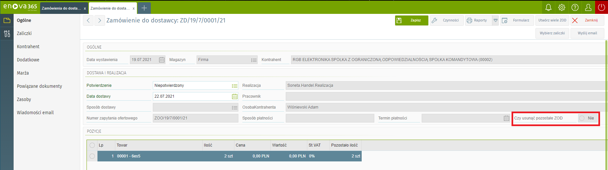

Dokumentacja mechanizmu usuwania niepotrzebnych ZOD
Wstęp:
Mechanizm w momencie wystawiania dokumentu ZD przy zaznaczonym odpowiednim parametrze usunie pozostałe dokumenty ZOD w relacji o statusie Bufor.
Sposób działania
Mechanizm w momencie zatwierdzania dokumentu zamówienia do dostawcy sprawdza czy w obiegu dokumentów znajdują się dokumenty ZOD o stanie bufor. Jeśli operator stwierdzi że pozostałe dokumenty ZOD w obiegu dokumentów nie są już potrzebne musi zaznaczyć na dokumencie przycisk "Czy usunąć pozostałe ZOD" a następnie zapisać dokument zamówienia.

Po wykonaniu tych czynności mechaznim usunie wszystkie dokumentu ZOD - Bufor z obiegu dokumentów.